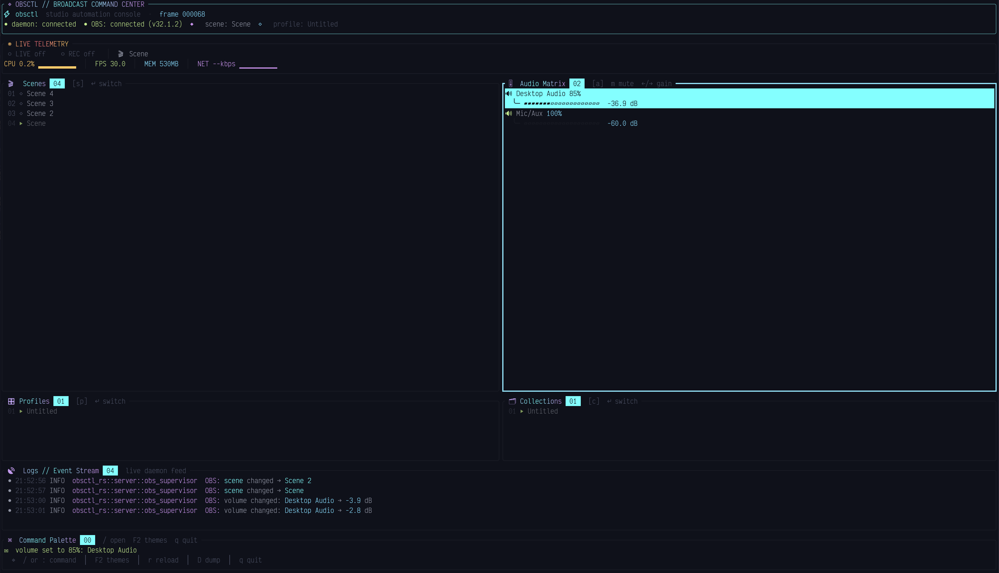
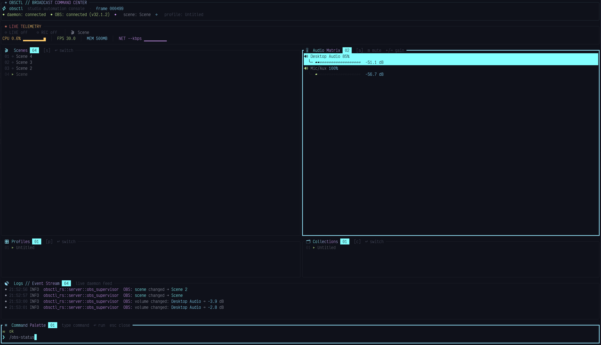
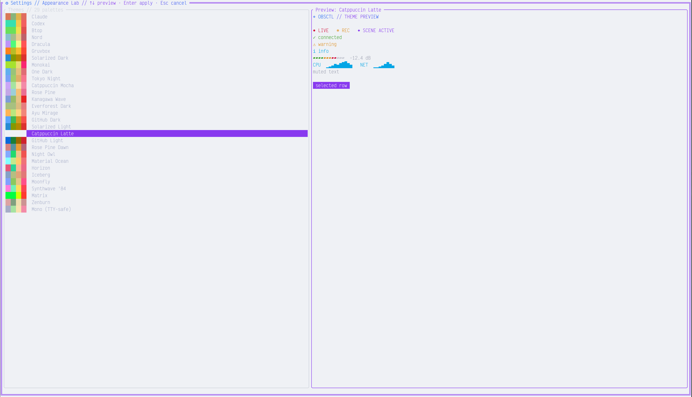

obs-websocket 5.x · linux · single binary
obsctl
Run your stream from the terminal — a live OBS dashboard you drive by keyboard, and a CLI you can bind to anything.
One Rust binary holds all three pieces: a daemon that owns the OBS WebSocket connection, a themeable TUI, and a proxy CLI with stable JSON output and documented exit codes.
$ curl -sSf https://github.com/worxbend/obsctl-rs/releases/latest/download/install.sh | sh
Installs to ~/.local/bin · MIT licensed · no runtime dependencies
Exactly one process talks to OBS
The daemon owns the WebSocket and the authoritative state snapshot. The TUI and the CLI are thin clients over a local Unix socket — they never connect to OBS, and they never auto-start the daemon. That's what makes a hotkey-fired obsctl scene cost one socket round-trip instead of a fresh handshake.
OBS Studio ◀── obs-websocket 5.x ──▶ obsctl server ◀── Unix socket ──▶ obsctl tui │ (subscribes: state, events, logs) └── Unix socket ──▶ obsctl scene 'Main' (one command, correlated response, exit)
State is pushed, not polled
Clients subscribe to topics and receive a full snapshot on connect, then deltas. The TUI redraws on events rather than on a timer.
Secrets stay out of config
The OBS password comes from an environment variable. Logs and IPC payloads pass through a shared redaction boundary, so a password can't leak through a log line or an error message.
Boundaries enforced by tests
The test suite parses src/ and fails the build if the CLI or TUI imports the OBS client, or if the wire protocol imports implementation types.
52 seconds, unedited
Watch it drive OBS
A real terminal session, recorded with asciinema — not a video. Text, so it stays sharp at any size, and you can scrub, pause and copy straight out of it.
: command palette, the <Space> which-key menu, and the theme picker.
Prefer your own terminal? The cast file lives in the repo — asciinema play docs/demo/obsctl-rs.cast.
The TUI
A dashboard you operate, not one you read
Every panel is reachable with one key. Scene switches, mutes and volume nudges apply optimistically and are debounced on the way out, so the interface never stalls waiting on OBS to answer.


: and run any action inline; results stream back with a typewriter reveal.
Enter persists, Esc reverts.| Key | Action |
|---|---|
j k · 12j | Move in the focused panel — with vim count prefixes |
gg G · Ctrl-D Ctrl-U | Jump to the ends of a list, or move half a pane |
Ctrl+hjkl · ⇥ | Move focus across the 2×2 panel grid, or cycle through it |
↵ | Switch to the focused scene, profile or collection |
m · h l | Mute the focused input, or nudge its volume by ±5% |
: | Open the command palette |
<Space> | Leader — a which-key popup lists what comes next |
| click · wheel · right-click | Select and activate rows, scroll a panel or the logs, cancel |
The four numbers that tell you the stream is fine
Go live and a stats pane opens beside the logs: the FPS you're holding, how much of each frame's time budget rendering eats, and the frames the render and output pipelines are losing. Rows are colored by health and topped with a verdict, so trouble reads from across the room.
Measured from this stream
OBS counts skipped frames since it launched. Start streaming on an hours-old session and you'd inherit every frame that machine ever missed — so the pane latches a baseline when the stream starts and subtracts it.
Frame time against its budget
At 60fps a frame has 16.7ms. The pane shows the average render as a share of that, because 3ms and 14ms mean very different things at the same framerate.
A verdict, not just digits
HEALTHY, STRAINED or DROPPING — taken from the worst of the four metrics, with what to do about it.
The CLI
Every action is one command, and every command is scriptable
Proxy commands connect to the socket, send one request, print the result and exit — ideal for window-manager hotkeys, Stream Deck bindings and shell scripts. Add --json for a stable envelope, and branch on the exit code.
| Command | Does |
|---|---|
obsctl scene 'Main' | Switch the program scene |
obsctl mute 'Mic' | Mute an input (also unmute, toggle-mute) |
obsctl vol 'Mic' 70 | Set input volume by percent |
obsctl profile 'Live' | Switch OBS profile |
obsctl collection 'Pod' | Switch scene collection |
obsctl status | Combined daemon + OBS status |
obsctl dump-config | Pull live OBS state into your config |
obsctl reconnect | Ask the daemon to reconnect to OBS |
obsctl tui | Launch the dashboard |
obsctl service install | Install the systemd --user unit |
# success $ obsctl --json scene 'Main' {"ok":true,"command":"scene","result":{"scene":"Main"}} # failure — code, message, exit status $ obsctl --json scene 'Nope'; echo $? {"ok":false,"error":{"code":"TARGET_NOT_FOUND", "message":"no scene matches 'Nope'"}} 4
| 0 | Success |
| 1 | Generic failure |
| 2 | Config error |
| 3 | Server, connection or auth error |
| 4 | OBS request error |
| 5 | Command parse error |
| 6 | IPC error |
Twenty-nine palettes, or bring your own
Every theme paints its own background across the whole interface rather than letting the terminal's show through — except mono, which deliberately doesn't, because it exists for consoles where truecolor isn't reliable. Set ui.theme: "custom" and define any subset of the thirteen colors to make your own.
Running in three commands
Linux, x86-64. The install script drops a single binary into ~/.local/bin and adds it to your shell path if it isn't there already. You'll need OBS Studio 28 or newer with obs-websocket enabled.
# 1 — install $ curl --proto '=https' --tlsv1.2 -sSf \ https://github.com/worxbend/obsctl-rs/releases/latest/download/install.sh | sh # 2 — create a config and point it at OBS $ obsctl init $ export OBS_WEBSOCKET_PASSWORD='your_password' $ obsctl validate-config # 3 — run the daemon, then open the dashboard $ obsctl service install && systemctl --user enable --now obsctl.service $ obsctl tui